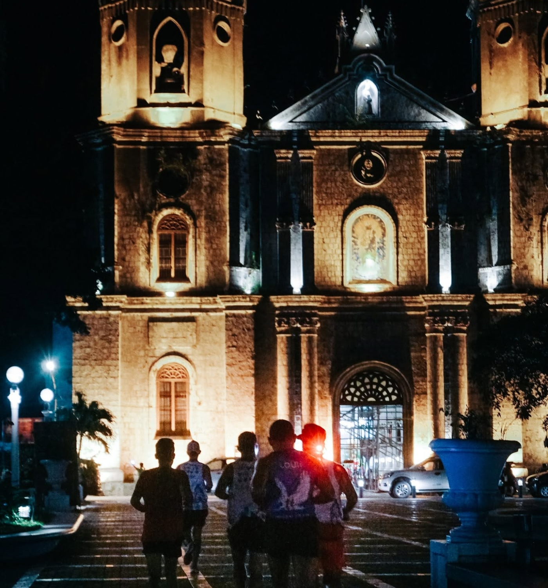
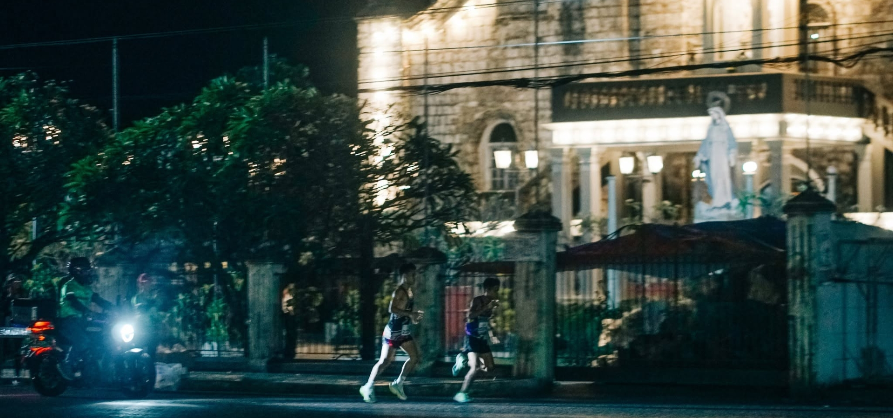
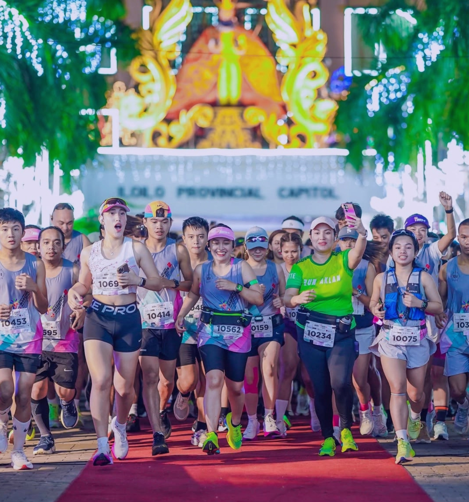
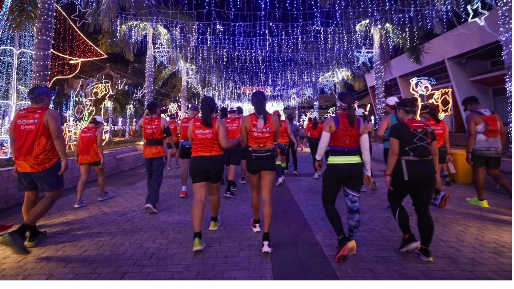

HERITAGE RUN 4
01 — THE IDEA
Heritage Run is a celebration of movement, place, and community.
Set in Iloilo City, Heritage Run invites runners to experience the city not simply as a course, but as part of the story they are running through.
Every kilometer becomes part of a shared experience — shaped by the streets, the people, and the spirit of Iloilo.


02 — THE CITY
Run through a city where history, culture, and everyday life meet.
03 — THE SPIRIT

Honoring the character, history, and identity of Iloilo.
Every kilometer is a personal test of determination.
A shared experience connecting runners, families, volunteers, and the city.
04 — THE RACE
